Виявлення аномалій у MicroGrid методами машинного навчання
Виконав: ст. гр. ДС-71мп Комаревич Олександр
Науковий керівник: проф. Ямненко Ю.С.
Магістерська робота на тему
Виявлення аномалій у MicroGrid методами машинного навчання
Виконав: ст. гр. ДС-71мп Комаревич Олександр Науковий керівник: проф. Ямненко Ю.С.
Мета і завдання досліджень
Метою даної роботи є подальший розвиток теорії та методів машинного
навчання у застосуванні до задачі знаходження аномальної поведінки людини у MicroGrid
Для досягнення мети в роботі вирішуються такі задачі:
Аналіз сучасних методів виявлення аномалій за допомогою Machine Learning, вибір та
обгрунтування методу дослідження
Дослідження варіантів аномальних поведінкових моделей у MicroGrid
Побудова алгоритму пошуку аномалій у Microgrid, вибір основних параметрів
Розробка програмного забезпечення для пошуку аномалій у MicroGrid
Тестування, аналіз результатів, оцінка точності пошуку аномалій, модифікація програми до прототипу
Об’єкт і предмет досліджень
Об’єктом дослідження є процеси, пов’язані з активністю людини у MicroGrid, що можуть
бути зафіксованими відповідними датчиками
Предметом дослідження є виявлення аномалій поведінки людини за допомогою методів
Machine Learning
Методи дослідження та розробки
Методи Machine Learning
Класифікатор Support Vector Machines з емпіричним правилом (правило 3-х сигм)
Мова програмування JavaScript
Програмний фреймворк React.js
Інструменти HTML, каскадна таблиця стилів CSS
Наукова новизна отриманих результатів
Отримала подальший розвиток теорія застосування методів машинного навчання
для обробки та аналізу великих даних (Big Data) в частині виявлення аномалій поведінки
людини у MicroGrid
Вперше запропоновано розв’язання задачі пошуку аномалій різних поведінкових моделей на базі
застосування методу опорних векторів (SVM)
Практичне значення
Розроблений метод дозволяє виявити аномалії поведінки людини у MicroGrid,
що важливо для попередження аварійних чи небезпечних ситуацій
Розроблений алгоритм детектування аномалій оперує з великою кількістю
даних у тренувальних вибірках та дає можливість врахувати суб’єктивні фактори, пов’язані з наявністю
людини у MicroGrid
За допомогою розробленої програми користувач може переглядати інтервали часу обраного дня та
аналізувати випадки фіксування аномалій
Актуальність теми
MicroGrid - сучасні електротехнічні комплекси розосередженої генерації
Велика кількість пристроїв генерації
Великі масиви різнотипних даних
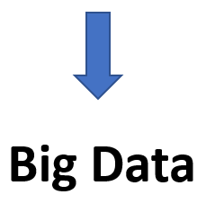
Аналіз даних з датчиків MicroGrid
Кількість спрацювань n двопозиційних датчиків (бінарні події): 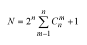
множник 2 - спрацювання у двох режимах
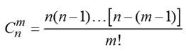- кількість сполучень з n елементів по i
Методи MACHINE LEARNING
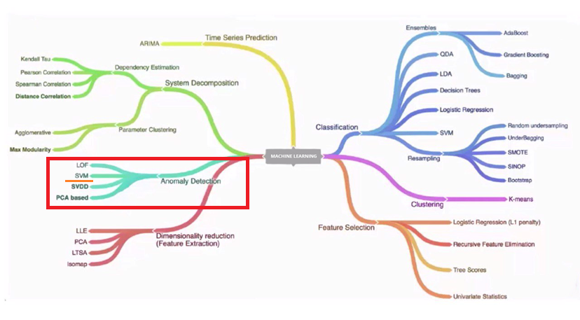
Правило 3𝜎(правило 68-95-99,7)
Практично всі значення нормально розподіленої випадкової величини
лежать в
інтервалі 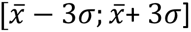
Не менше ніж з 99,7% достовірністю значення нормально розподіленої випадкової величини лежить в
зазначеному
інтервалі
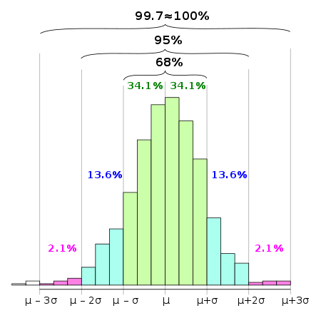
Правило 3𝜎(правило 68-95-99,7)
Найбільш поширений показник розсіювання значень випадкової величини щодо її
математичного очікування
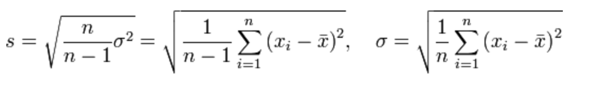
𝑠 - стандартне відхилення, незміщена оцінка середньоквадратичного відхилення випадкової величини 𝑋
відносно її математичного очікування
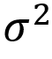 - дисперсія
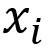 - i-й елемент вибірки
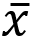 - середнє арифметичне вибірки
𝑛 - обсяг вибірки
Вирішальні параметри
N - кількість спрацьовувань датчика руху в одному приміщенні протягом
інтервалу τ=5 хв
Усереднене значення енергії споживання W за інтервал τ
Виявлення випадків швидкого «безсистемного» переміщення людини, що може бути наслідком знаходження у
стані афекту,
наляканості чи психологічного розладу
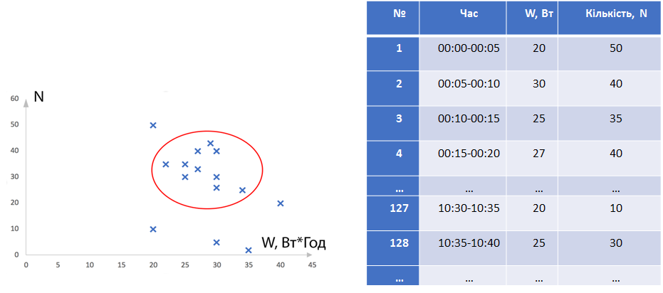
Схема та алгоритм ANOMALY DETECTION У MICROGRID
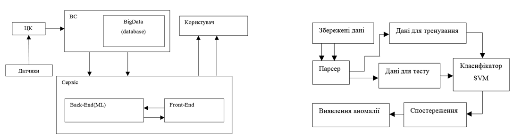
Схема послідовності дій машинного навчання
Приклад
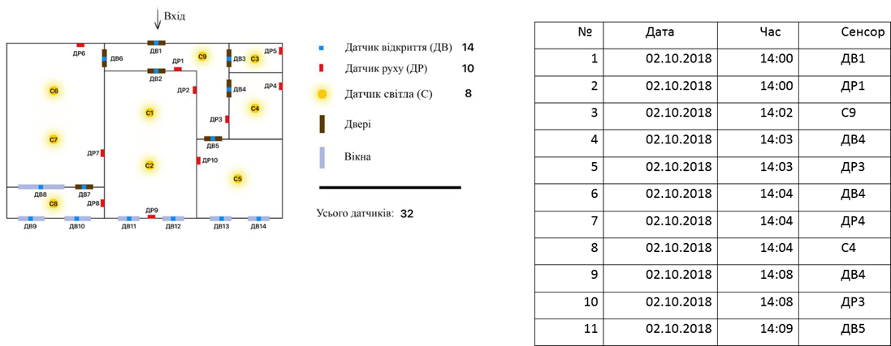
Пересування людини між групами приміщень
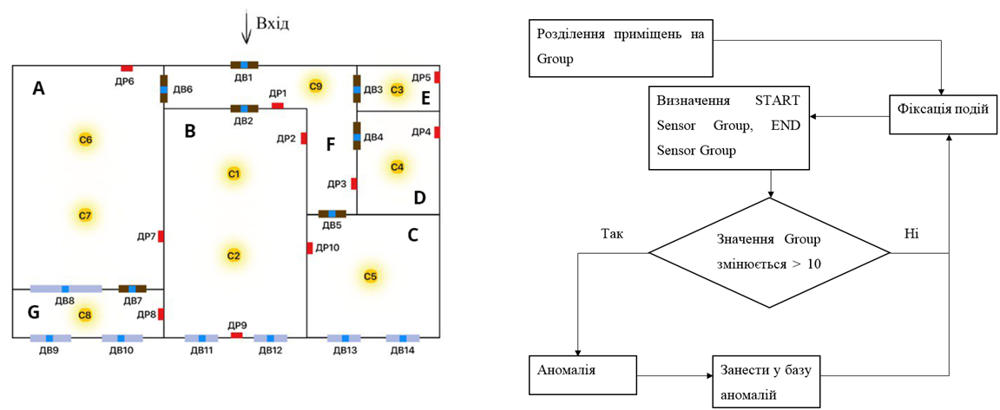
Таблиця історії подій: розподіл на групи
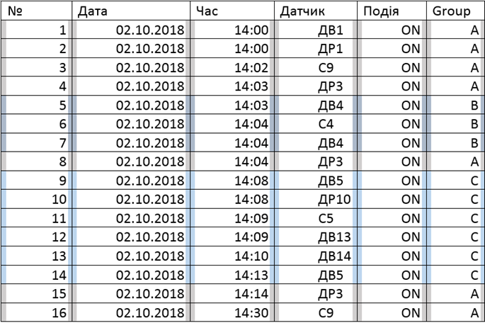
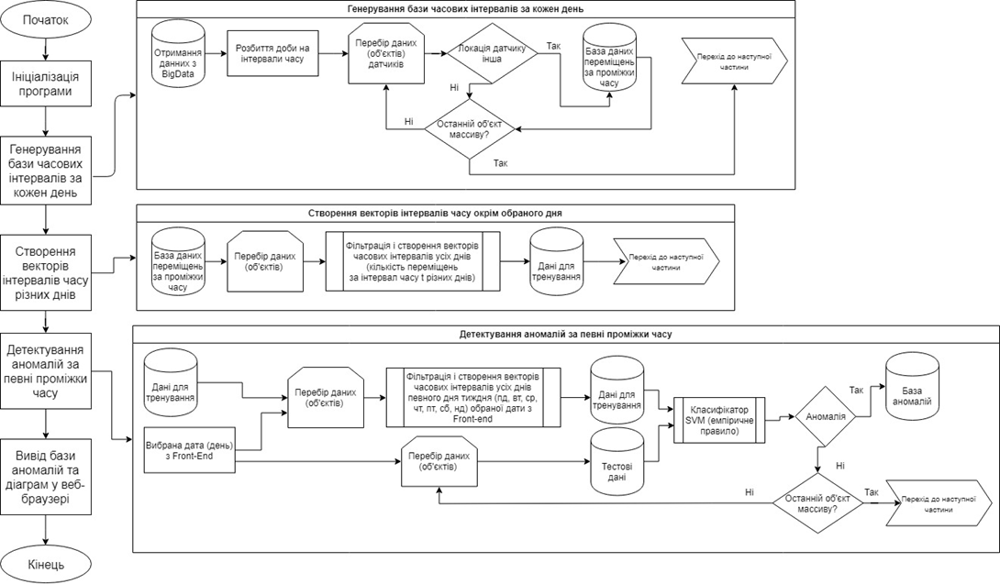
Алгоритм роботи програми
Етапи розробки - І
Детектування кількості переміщень за інтервал, фіксація цих значень за різні інтервали,
додавання до бази даних
Один вектор даних за усі дні і за усі проміжки часу, порівняння з тестовими даними
Невідповідність результатів за різні інтервали – необхідність врахування часу доби
Етапи розробки - І
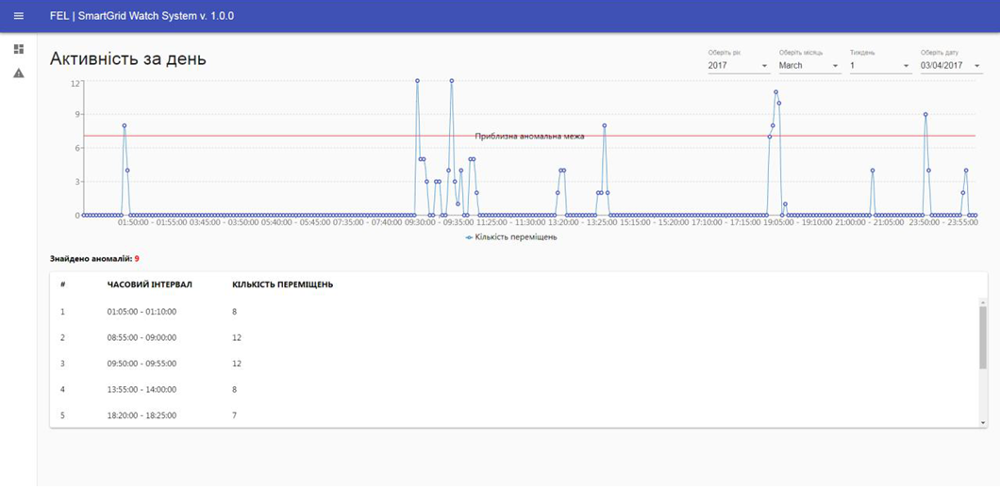
Етапи розробки - ІІ
Два вектори: дані за весь час + дані для кожного інтервалу кожної доби
Визначення «норми» для кожного інтервалу
Порівняння попередніх результатів (training data) з новими (test data)
Етапи розробки - ІІІ
Врахування «специфічних» днів
Третій вектор
Модифікація алгоритму – визначення норми за певний день і певний проміжок часу
Розширення набору тренувальних даних
Приклад – дані за 3 місяці (певний день)
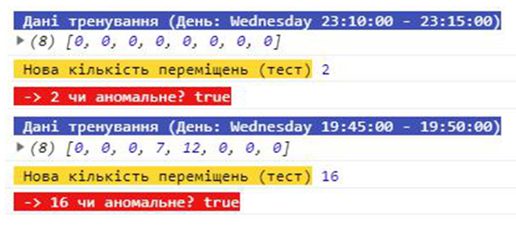
Інтерфейс програми (головна сторінка)
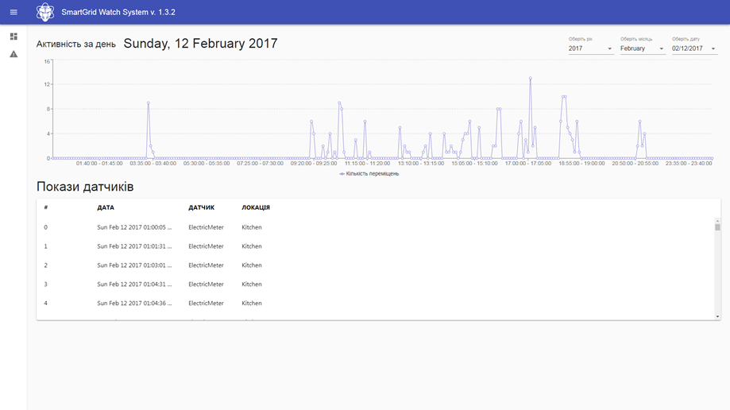
Інтерфейс програми (сторінка аномальної активності)